The feel
Cel shading renders 3D models so they look like a cartoon or an illustration.1 When Satoru Takizawa first saw Yoshiki Haruhana's sketch of a new Link for The Wind Waker, he thought a character like that could be given actions that look and feel good however he moves,1 and Nintendo's Japanese advertising called the game animation you can touch.2 For Genshin Impact's lighting and materials, miHoYo set "dirty, noisy, dark" against "fresh, bright, clean, anime-like" and kept both groups of words in mind at all times.3
It works by leaving things out. Takizawa found that The Wind Waker's look made puzzle objects easier to understand, where photorealistic graphics make game information hard to show and you can't tell what moves or what you should touch.1 Eiji Aonuma's phrase for it is "reality over realism".4 In The Wind Waker, sunlight and breeze are shown in a pleasant way, with anything extra cut out.4
- bright
- graphic
- crisp-edged
- expressive
- sunlit
- hand-inked
Where it comes from
Cel shading takes its look from cartoons.5 In hand-drawn cel animation, specialised artists traced the animators' drawings onto transparent celluloid sheets and painted over them in opaque colour.6 In games, the style reached the mainstream with Jet Set Radio and The Wind Waker.7 Jet Set Radio came out on the Dreamcast in 2000, when, as its lead designer Kazuki Hosokawa recalls, non-photorealistic graphics were starting to draw attention as an advance in CG,8 and Arc System Works credits it with introducing the inverted hull outline.9 Nintendo showed The Wind Waker's look at Space World in 2001, to the shock of many Zelda fans, and released the game in December 2002.1 Borderlands switched three-quarters of the way through development to an inked "concept art style" close to cel shading,10 and Guilty Gear Xrd drew its fighters with 3D polygons instead of hand-drawn sprites and still looked just like a cartoon.11
Core elements
Two or three flat shading tones
Toon shading swaps smooth lighting for constant, sharply delineated colours. NVIDIA's example uses three tones: one for bright diffuse light, one for dark diffuse and one for the specular highlight.5 Breath of the Wild divides surfaces into two bands of lightness,7 and the Unity Toon Shader works in three regions: a base colour for lit areas, a first shade for lighter shadows and a second for the darkest tones.12
Hand-picked shadow colours
In animation production, colour specialists set the colours for every scene, so the Unity Toon Shader applies the light and shadow colours you choose whatever the colour of the light in the scene, a feature its documentation calls essential for cel-shaded characters.13 In Guilty Gear Strive, Arc System Works can force the shading and light on single parts such as hands, legs and weapons, even when that isn't how lighting really works.14
Ink outlines
Outlines are one of the most important elements in the impression a cel-animated image makes.15 They help the eye separate a character from the background, which counts in fast games where players must tell two objects apart in a split second.9 Borderlands paired heavy outer lines, generated by the engine, with interior lines painted into its textures.16
Rim light and hard highlights
A rim of light along the edges helps the silhouette stand out among the flat-shaded surfaces.7 Highlights get the same treatment: each one either exists or does not,5 and Godot's Toon specular mode draws a toon blob that changes size with roughness.17
Exaggerated proportions
A stylised, anime-like look lets heads be big and legs short without feeling weird, and frees faces and gestures from the awkwardness that realistic expressions usually have.2 With the characters' eyes much larger, The Wind Waker's team added more eye and mouth patterns to make faces richer.2 Borderlands changed its look largely because of exaggerated action, such as a leap onto an eight-foot rock, which made little sense for a realistic-looking character.16
Limited, hand-posed animation
Guilty Gear Xrd gives its character animations deliberately limited frame rates that imitate the choppiness of TV anime.11 Inexpensive TV cartoons often use limited animation, repeating each drawing two to five times, so movement comes out jerky rather than smooth.6 Interpolating between keyframes made motion smoother but more 3D, so Xrd's animators switched it off, posed every frame by hand and deformed the mesh on each one to add imperfection.18 Before Guilty Gear Strive, Arc System Works aimed to recreate the Japanese style of hand-drawn animation in 3D.14
How to do it
Start from 2D concept art
Paint the target first and make the 3D match it. Hi-Fi RUSH's director took a 2D concept image of the first stage, with its blue sky and exaggerated architecture, and asked for visuals indistinguishable from it.19 Gearbox asked what would happen if it converted Borderlands' concept art straight into 3D, keeping the ink splatter, softly traced lines and imperfect strokes.16
Step the diffuse lighting
Take the diffuse term N·L, the dot product of the surface normal and the light direction, and sort it into bright or dark with a step function. NVIDIA's Cg Tutorial turns values from 0 to 0.5 into 0.2 and from 0.5 to 1 into 1, through a 1D ramp texture two texels wide with no filtering.5 For more than two bands, sample a ramp texture with more steps.7 Soften the edge just enough with smoothstep(0, 0.01, NdotL), and add a 0.4 grey ambient colour so the dark side isn't black.7
Build the bands with a colour ramp
Feed the output of a diffuse shader into a colour ramp, a flexible way to build a toon shader.20 Set the ramp to constant interpolation so each stop is a flat step, and space the stops evenly so every step gets the same share.21 Where a material has a toon diffuse mode, it gives a hard cut whose softness follows roughness, and a toon specular mode gives a highlight blob that changes size with roughness; turning off the sky's contribution to ambient light gives a better result.17
Paint the shade colours
Light the scene with at least one directional light, and start with neutral white so you can see what the shading colours themselves do.12 Give the base map the fully lit colours and the first shade map a darker tone, raise the step value until the shade shows, and keep the feather low for graphic, posterised edges.12 For basic cel shading the base colour and one shade are enough.12
Control shadow shapes with normals
Shadow shapes are designed, not left to the mesh. Anime-style modellers commonly edit vertex normals to control the light, for example spherising the normals of hair so it shades like a ball, and Arc System Works' toon fighting games generally use no normal maps.9 A shading position map can also fix shadows in place in UV space.22
Draw the outline as an inverted hull
Draw the mesh again, pushed out slightly along its normals and showing only its back faces: the part that sticks out becomes the line.9 As a material, that is a black, unshaded second pass that culls front faces and grows the mesh a little.17 Arc System Works scales the push by camera distance times tan(FOV/2), so lines hold in close-ups and zooms, and stores each vertex's line width in its vertex colour alpha.9 For an even width in screen pixels, push in clip space, where a width of 1 can equal 1 pixel.23
Add the rim and the highlight
For the rim, take 1 minus the dot product of the view direction and the normal, multiply it by N·L raised to the power 0.1, which keeps it on the lit side and sets how far it reaches, then cut it with smoothstep at 0.716 plus or minus 0.01.7 For the highlight, take N·H, the dot product of the normal and the half vector, times the lit term, raise it to the power of the glossiness squared (32 × 32 = 1024), then cut it with smoothstep(0.005, 0.01).7
Cheat sheet
- Rim
- 1 minus N·V, times N·L to the power 0.1, cut at 0.7167
- Highlight
- Blinn-Phong N·H to the power glossiness² (32² = 1024), cut with smoothstep(0.005, 0.01)7
- Outline width
- Push proportional to camera distance × tan(FOV/2), so lines are thinner up close and wider far away: for example 1 to 3 mm on a face in close-up, 7 to 10 mm in long shots9
- Line control
- Vertex colour alpha: 0 none, 0.5 standard, 1.0 double9
- Poly budget
- About 13,000 triangles per hero, 8,000 per creature (Borderlands)16
Do
- Vary the line weight: thin on hair and small parts, thick on muscles and large volumes, as illustrators and manga artists do.9
- Paint the creases into the texture. In Borderlands a few well-placed ink strokes in the diffuse map define the wrinkles in a jacket or the pores on a face.16
- Taper or remove lines around the eyes and other delicate features, where they distract. An outline width map sets the thickness per texel.12
- Commit to one key light. Gearbox invented a stationary moon for Borderlands to give it a single, fixed light source in the sky with dramatic shadows.10
- Preview the final shader inside your 3D software. Arc System Works built shaders for each package it uses that match the game engine, so modellers and animators see the real lines as they work.9
Avoid
- Flat-shaded meshes under an inverted hull. Without shared, smoothed vertices the grown outline breaks into gaps,17 which is why Arc System Works keeps a second set of normals just for the outline.9
- One outline width for every shot. A width meant for long shots is too thick when the camera draws close, and a close-up width is too thin far away.9
- A bare step that flickers. A hard step function aliases as objects move, so soften it slightly with smoothstep, or use a wider ramp texture with filtered in-between steps.5,7
- A rim all the way round. Drawn around the whole object it looks like an outline rather than light, so keep it on the lit side.7
- Inking everything. On Borderlands' Lilith, the more lines the artists added, the less appealing she became.16
Tools and tutorials
- Unity Toon Shader
Base, first and second shade colours, outlines and rim light, made for cel-shaded animation.
- Toon Shader
Roystan writes a lit toon shader in Unity, from two bands to rim and specular.
- Guilty Gear Toon Line Control Techniques
Arc System Works on inverted hull outlines: width, vertex colours and the lines to remove.
- 5 ways to draw an outline
Rim, inverted hull, blurred buffer, jump flood and edge detection outlines compared in Unity.
- Standard Material 3D
Godot's Toon diffuse and specular modes, and Grow for cheap outlines.
- Shader To RGB Node
Blender's route to a toon shader in EEVEE, through a colour ramp.
- The Cg Tutorial, Chapter 9
NVIDIA's 2003 walkthrough of toon shading with ramp textures and outlines.
Palette
Sky, sea and tunic come from The Wind Waker HD; skin, red and the brown ink line from Jam in Guilty Gear Xrd REV 2. Arc System Works found that in anime, shaded skin takes a red tint from the flesh under it.18 Click a swatch to copy its hex code.
Feel the vibe
In motion
Listen
Bright and buoyant, a good match for flat colour under a big sky.
YouTubeLoose and funky, for thick ink lines and flat colour on the move.
YouTubeLoud guitars for hard shadows and held poses.
YouTubeDriving rock with a clear beat to time your animation to.
YouTubeThe Lupin the Third theme arranged as jazz rock; Jet Set Radio's director names the series as formative.8
YouTube
More references
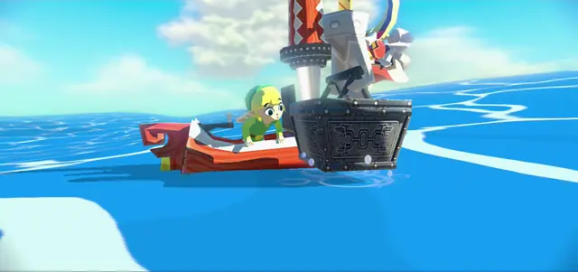
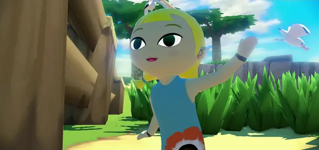
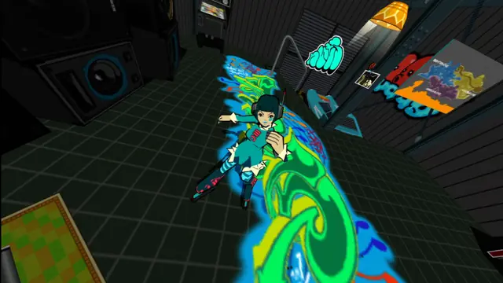
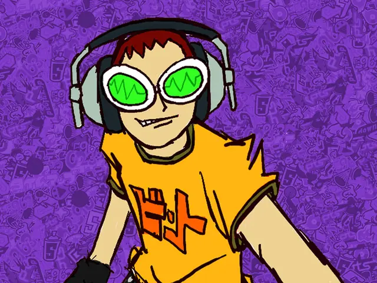
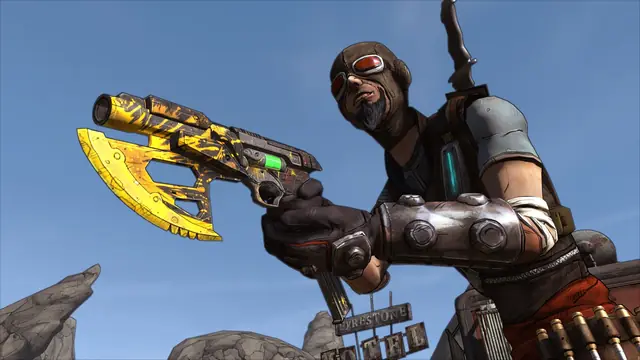
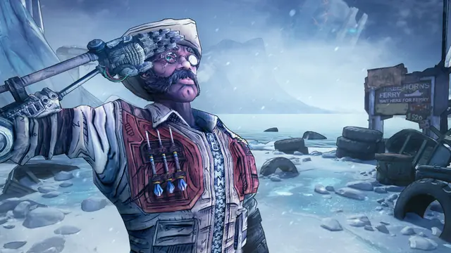
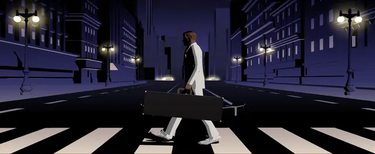
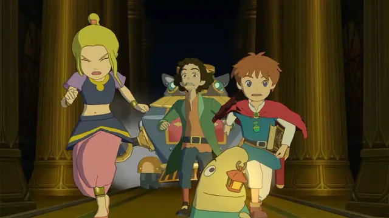
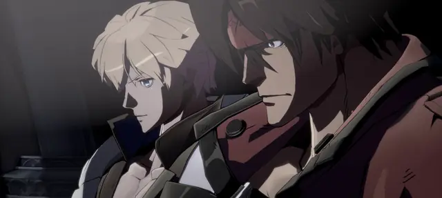
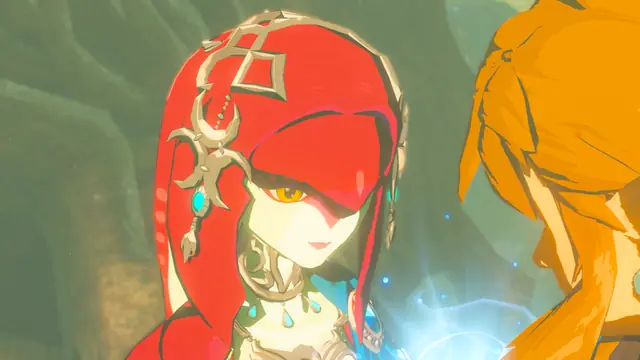
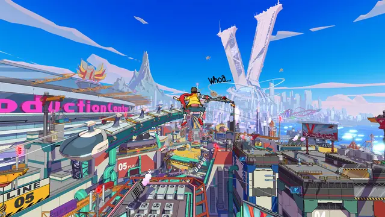
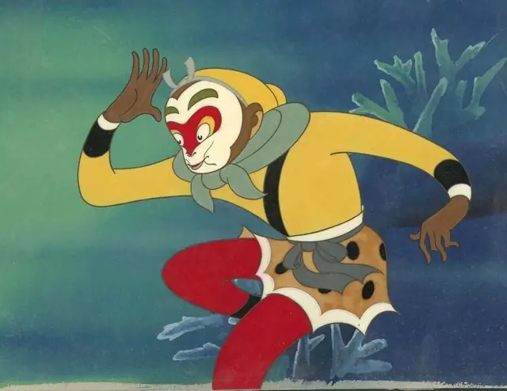
Games
- Jet Set Radio
Arc System Works credits it with introducing the inverted hull outline.9 Study its outlines on characters in fast motion.
- The Legend of Zelda: The Wind Waker
Study the faces: bigger eyes and more eye and mouth patterns carry the acting.2
- Borderlands
A close cousin rather than strict cel bands: hand-inked textures and an engine-drawn outline under realistic lighting.16
- Guilty Gear Xrd -SIGN-
Study how it varies line weight and holds animation frames.9,11
- The Legend of Zelda: Breath of the Wild
Roystan's toon shader tutorial uses it as its reference: two bands of lightness with rim and specular on top.7
- Genshin Impact
Stylised rendering built on PBR, developed for mobile first with console close behind.3
- Hi-Fi RUSH
Cel shading with modern light: deferred lights, volumetric fog, ambient occlusion, global illumination and bloom, restyled to fit.19
Film, art and more
- Cel animation
Study how traced drawings and opaque paint sit on transparent celluloid sheets over a background.6
- Tekkonkinkreet
Jet Set Radio's director names it, with Lupin the Third, as formative for the game's personality.8
- Lupin the Third
Another formative influence Jet Set Radio's director names, alongside Tekkonkinkreet and the big beat music of the time.8
- Futurama
One of the basic inspirations for Hi-Fi RUSH: the far future, with very retro robots.19
Sources
- 1Iwata Asks: The Legend of Zelda: The Wind Waker HD, 1. How Toon Link Was Born
- 2Iwata Asks: The Legend of Zelda: The Wind Waker HD, 3. The First Part Is Divine But...
- 3From Mobile to Console: Genshin Impact's rendering technology on Console
- 4Iwata Asks: The Legend of Zelda: The Wind Waker HD, 5. Over-designed
- 5The Cg Tutorial, Chapter 9. Advanced Topics
- 6Motion-picture technology: Animation
- 7Toon Shader
- 820 Years Later, The Rowdy Creators of Tokyo-to Reflect on Making Jet Set Radio
- 9Guilty Gear Toon Line Control Techniques [ENG ver.]
- 10Behind Borderlands' 11th-hour style change
- 11Good lord, is Guilty Gear Xrd pretty and impenetrable
- 12Getting Started with Unity Toon Shader
- 13Unity Toon Shader overview
- 14How Guilty Gear -Strive- hits an ultra combo with groundbreaking visuals and gameplay
- 15Outline Settings
- 16A Fine Line
- 17Standard Material 3D and ORM Material 3D
- 18GuiltyGearXrd's Art Style: The X Factor Between 2D and 3D
- 19Hi-Fi RUSH was inspired by Shaun of the Dead and Futurama
- 20Shader To RGB Node
- 21Color Ramp Widget
- 22Three Color Map and Control Map Settings
- 235 ways to draw an outline